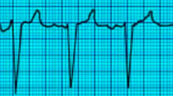
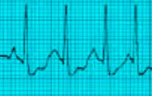

STABLE
TACHYCARDIA
Read the unstable tachycardia section first. The patient is in stable
tachycardia if he does not have any of the symptoms or signs that put
him in the 'unstable' category, ie he DOES NOT have chest pain,
shortness of breath, altered mental status, hypotension or pulmonary
edema.
Perform
the following steps:
- Oxygen
by simple face mask
- connect
a 3 lead EKG
- start
an iv line
- hook
up a NIBP
- connect
a pulse oximeter
- remember
to listen to the heart and lungs
- Get a
12 lead EKG if available
- Draw
and send venous and arterial blood
The
first step is to determine if the QRS complexes are narrow or
wide.
The
QRS complex is narrow if it is <0.12 sec duration and wide if it is
>= 0.12 sec duration. And a quick reminder, each small box on the
EKG strip is .04 sec. So if the QRS occupies 3 or more small boxes it
is wide complex.
Narrow QRS means it is supraventricular. It
could be atrial or junctional.
Once we note that it is narrow QRS
tachycardia, the next step is to see if it is regular or
irregular.
NARROW AND REGULAR Narrow
complex stable tachycardia with regular rhythm:
Possibilities:
- PSVT
paroxysmal supraventricular tachycardia (most likely) Rate
>150 Abrupt Onset and Offset.
- Sinus
Tachycardia Rate >100
- Junctional
Tachycardia. This is rare. Digitalis Toxicity can cause this
rhythm. Rate >100, gradual onset and offset.
-
The first step is to try vagal maneuvers:
-carotid sinus
massage OR
-valsalva
maneuver (tell patient to bear down or blow out against closed lips)
-
If this fails, administer adenosine 6mg
rapid IV (follow with 20 cc Normal Saline bolus flush)
-
If this fails administer adenosine 12
mg IV
-
If this fails control the rate using
Diltiazem 15mg IV
-
You can repeat Diltiazem 25mg after
waiting for 15 minutes
Remember
the difference between sinus tachycardia and PSVT. Sinus
tachycardia has gradual acceleration and deceleration whereas PSVT is
of abrupt onset and then continues persistently. Sinus tachycardia is
<150/mt. PSVT rate is >150. Junctional tachycardia rate is
>100 and there is no identifiable P waves.
Just a quick note about PSVT : This
could be due to AVNRT or AVRT mechanisms. In AVNRT the re-entry
loop is confined inside the AV node, whereas in AVRT there is a
pathway that passes from atria to ventricle and is outside the AV
node. This is also called Wolf Parkinson Syndrome.
In both AVRT and AVNRT the AV node completes the reentry pathway that
keeps the cycle going, and Adenosine shuts down the circuit by
shutting down the AV node.
NARROW AND IRREGULAR Narrow
complex stable tachycardia with irregular rhythm:
Possibilities:
- Atrial
fibrillation (Afib has no identifiable P waves)

- Atrial
flutter (saw
tooth pattern)

- Multifocal
Atrial Tachycardia (at least 3 different types of P waves , different
in polarity, size or shape). This is due to abnormal automaticity.
Seen in COPD.

Management:
-
Use
Diltiazem to slow down the rate. The dose is 15mg IV. Diltiazem has
less inotropic effect and is safe in CHF. Controls rate by means of
AV block.
-
Wait
15 minutes, and if needed use another 15mg of Diltiazem
-
If Flutter / Fibrillation has been present for >48h:
-
Anticoagulate, do a TEE to exclude thrombus in the heart, then do elective
cardioversion (50-100J for flutter, 100-200J for fib)
- If
you see Torsades de Pointes, use Magnesium 2gm IV (please
remember that in an unstable patient with TDP, you use
defibrillation). Loading dose of 1 to 2 grams mixed in 50 to 100
ml. of D5W IV over 5 to 60 minutes. Maintenance dose is 0.5
to 1 gram per hour IV, titrate to control TDP.
- If
Atrial Fibrillation is present with WPW, use Procainamide or
Flecainide (these act on accessory pathway) Adenosine could be
lethal in this situation.
-Procainamide 100 mg IV at a rate not exceeding 50 mg/min repeated
every five minutes as needed to a total dose of 1 g.
-Maintenance infusion 1-4
mg/minute
Magnesium should be used carefully if the patient is in renal failure.
Magnesium given rapidly can cause hypotension.
TDP may seen in a setting of alcohol abuse or digitalis toxicity or
Tricyclic overdose.
Do NOT use Diltiazem in wide complex tachycardia or WPW.
Do not use Adenosine in WPW, it can lead to Ventricular Fibrillation.
Half life of Adenosine is 9-12 seconds, always use with a 20 cc saline
flush so that we can get the medication to the heart.